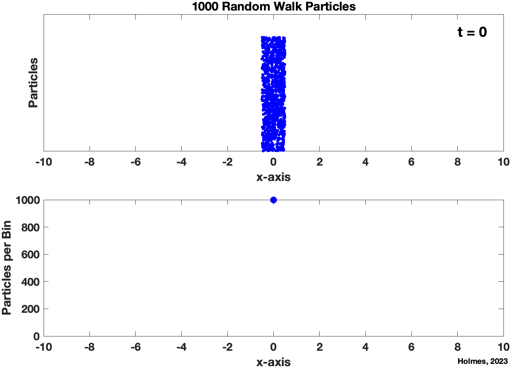
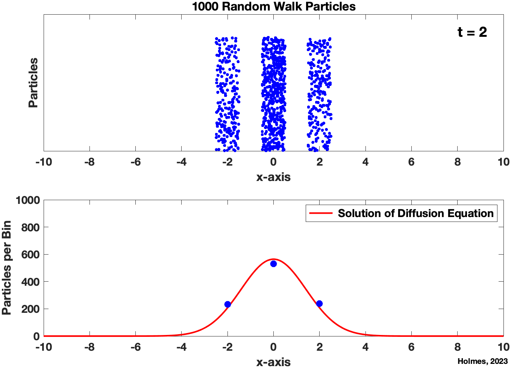
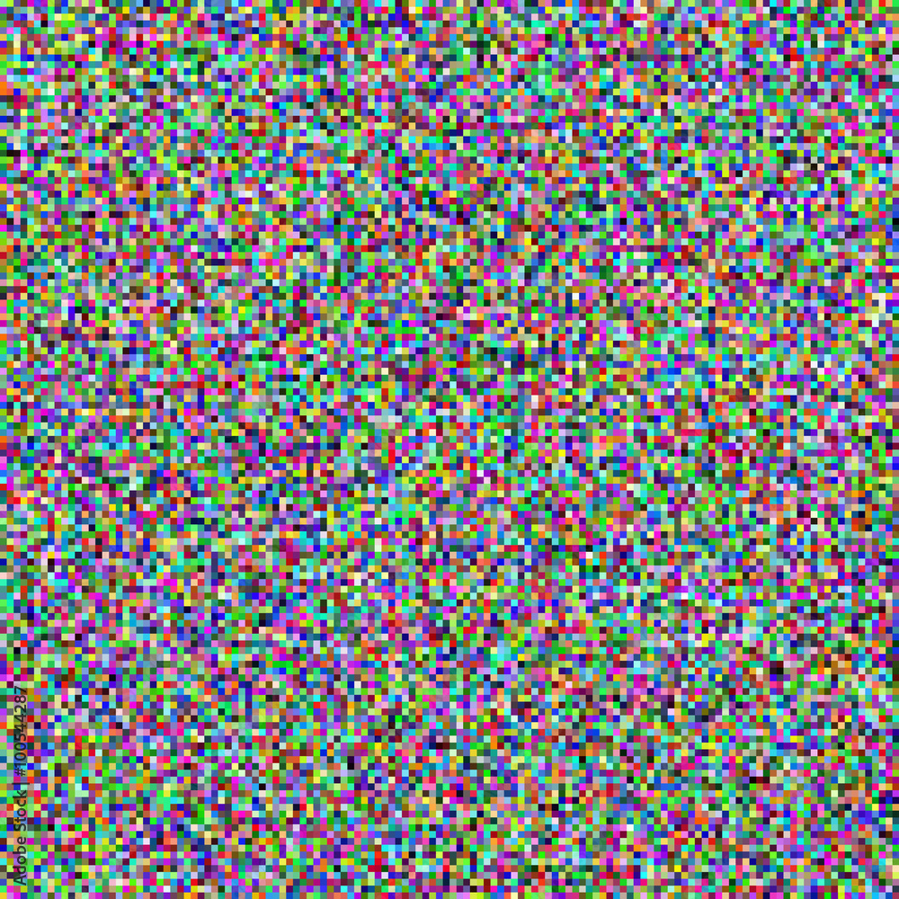
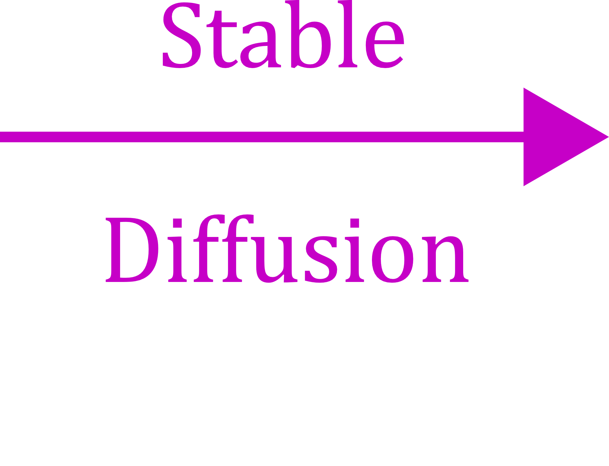

Diffusion Equation, Einstein, and AI Generated Images
Video from the experiment. The particle is shown on the left, and its recorded positions are on the right. Reference: "Measurement of the Translational and Rotational Brownian Motion of Individual Particles in a Rarefied Gas," by J. Blum, et al, Physical Review Letters (2006).
Brownian Motion and Random Walks
When looking through a microscope at pollen granules suspended in water, Robert Brown saw that they were in constant motion, never appearing to slow down or stop, and following irregular paths, similar to the path shown above. What is happening is that the granules, which are approximately 2 microns in length, are under constant bombardment by the surrounding water molecules. Although the latter are much smaller, having a diameter of approximately 3 x 10^{-4} microns, there are many of them and they are responsible for a very large number of random impacts on each granule. The irregular nature of this forcing gives rise to the randomness of the motion. There are many online videos showing this, and a couple of examples are: Example 1 and Example 2.
In what follows the particle path in the above figure is described as a random walk. After making this statement it is probably best to say that for those who are picky about having a rigorous mathematical development, versus the more loosey goosey version presented here, you should consider the references at the end.
Question
Suppose that you start out with a group of particles, and they occupy a particular region.
For example, in the figure below 11 particles occupy a triangular shaped region.
Einstein's Answer
Einstein realized that the distribution of the particles is determined by the diffusion equation. To prove this he considered the simpler case of when the particles move back and forth along the x-axis as illustrated in the figure below. He assumed that each time a particle moves it is equally likely to go left or right. He then showed that if u(x,t) is the concentration of the particles at x and time t, then
Video Proof of Einstein's Answer
The video starts out with 1000 particles located at x=0. The first frame of the video is shown below, on the left. To better visualize the individual particles, they are shown occupying a small interval (called a bin) centered at x=0. At each time step, each particle jumps to the left or right with equal probability. So, at t=1 there are about 500 particles at x=-1 and another 500 at x=1. At t=2 there are about 500 particles at x=0 and 250 at x=-2 and at x=2 (the frame of the video is shown below). The locations of the particles are shown in the upper figure in the video. In the lower plot the number per bin is shown along with the corresponding solution of the diffusion equation. It is seen that except at the very beginning (i.e., t near 0) that u(x,t) provides a good approximation of the number of particles at each location, as predicted by Einstein.
The video is HERE. Left click: to stream video, Right click: to download video. Suggestion: use the slider at the bottom to manually progress the video (versus just letting it run at its own speed).
 
New Question: Can You Go Backwards?
For the 250,000 particle simulation above, given the random jumps being made, it is impossible to start with the distribution at t=100 and then determine what the distribution was at t=0. There is, however, a possible way this might be done if you are willing to modify the situation a bit and also know about neural networks. To explain how, suppose you are told that at t=0 the region was either a triangle, a rectangle, or a star shaped region. You then train your neural network by running the above 250,000 particle simulation using a wide variety of triangle, rectangle and star shaped regions. This allows the neural network to learn how to distinguish between the three given shapes. Once complete, given the t=100 result above, your neural network would be able to tell you what was likely the original image. This idea is what (very roughly) underlies Stable Diffusion, a latent diffusion based neural network for producing images based on a text prompt. To illustrate, suppose you have a very noisy image of color pixels as shown on the left in the figure below. If you tell Stable Diffusion that this was originally a picture of an astronaut riding a horse, it will then construct the mostly likely image that does this (based on what information it was trained on). The result is on the right (this photo is discussed on the Wikipedia page for Stable Diffusion located HERE).
  
Extras
Einstein's paper: The paper is HERE. Some highlights in the paper are: the ideal gas law on page 550, Taylor's theorem on page 557, and the diffusion equation on page 558 (it is the only equation in the paper that is numbered). The solution is also given on page 558. An English translation of the paper is HERE.
Make your Own Video: the MATLAB code used to create this video is HERE. You will need to modify the location of the video file on line 6. You will also need to download 2 other MATLAB files, located HERE and HERE.
References
Introduction to the Foundations of Applied Mathematics, 2nd Edition by Mark H. Holmes (Springer, ISBN 978-3-030-24260-2). Chapter 4 explores the connections between random walks and the diffusion equation, and derives some of the solutions that are obtained from these connections.
Asymmetric random walks and drift-diffusion by M. Holmes (Europhysics Letters, Vol 102, Num 3, DOI 10.1209/0295-5075/102/30005). Extends Einstein's approach to the case of when the probability of jumping left is not necessarily equal to the probability of jumpting right.